Repeated segments are a common feature of protein sequences and often play important roles in structure and function. While these segments may initially arise as exact copies, they typically diverge over time as mutations accumulate, making many repeats only approximate rather than exact. As a result, repeat identification has long been a challenging problem in computational biology, motivating decades of algorithmic work. More recently, protein language models (PLMs) have been shown to detect such repeats and exploit them in masked-token prediction. But what internal mechanism enables this ability? In this work, we uncover the mechanisms by which PLMs detect such repeats.
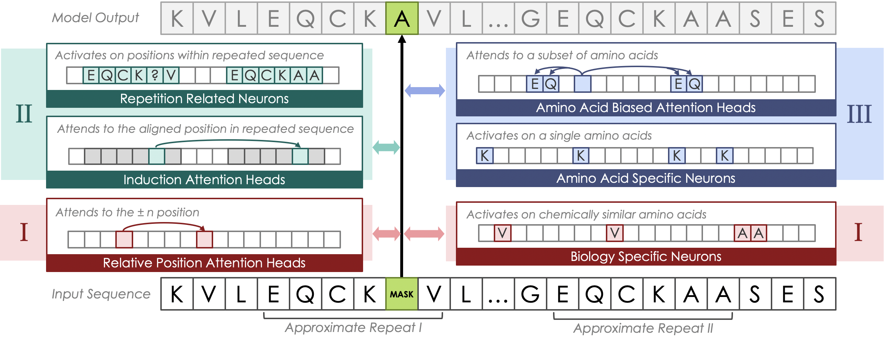
Gal Kesten-Pomeranz, Yaniv Nikankin, Anja Reusch, Tomer Tsaban, Ora Schueler-Furman, Yonatan Belinkov. “Induction Meets Biology: Mechanisms of Repeat Detection in Protein Language Models”.
@misc{kestenpomeranz2026inductionmeetsbiologymechanisms,
title={Induction Meets Biology: Mechanisms of Repeat Detection in Protein Language Models},
author={Gal Kesten-Pomeranz and Yaniv Nikankin and Anja Reusch and Tomer Tsaban and Ora Schueler-Furman and Yonatan Belinkov},
year={2026},
eprint={2602.23179},
archivePrefix={arXiv},
primaryClass={cs.LG},
url={https://arxiv.org/abs/2602.23179},
}
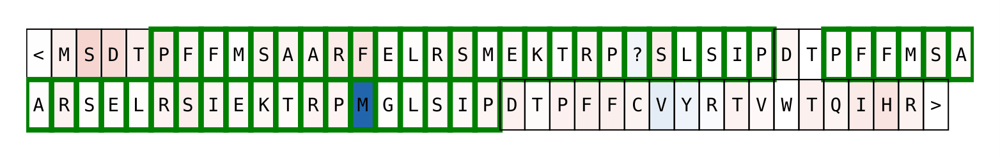
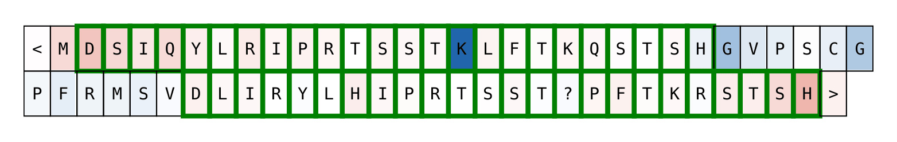
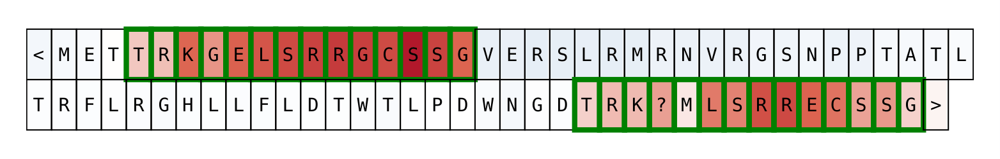
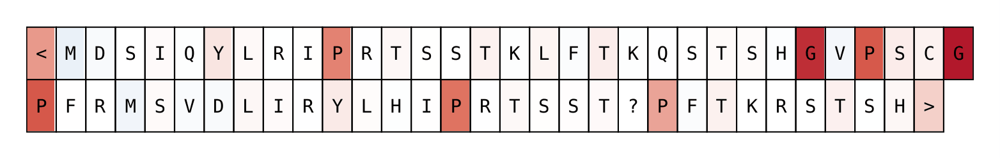
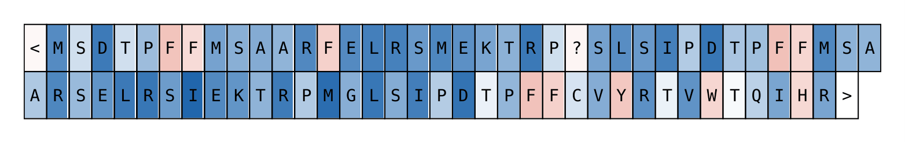
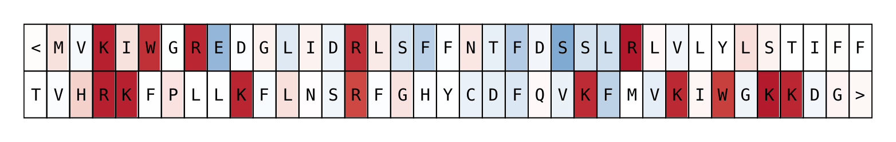
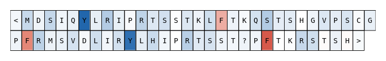
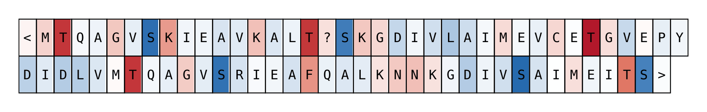
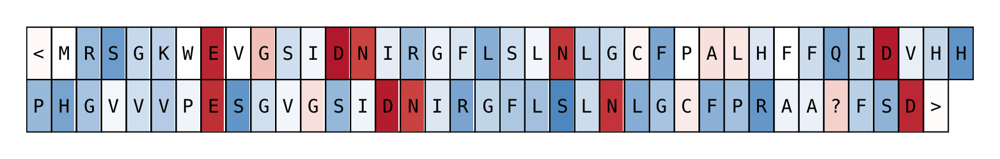
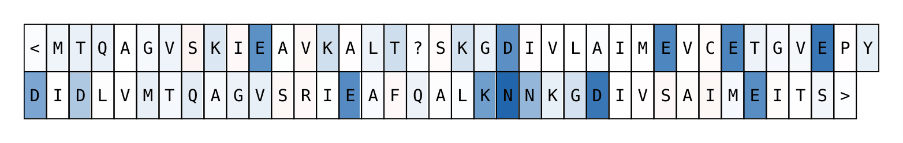
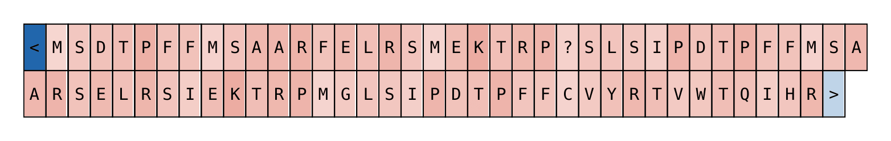
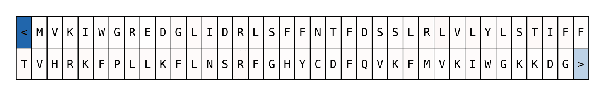